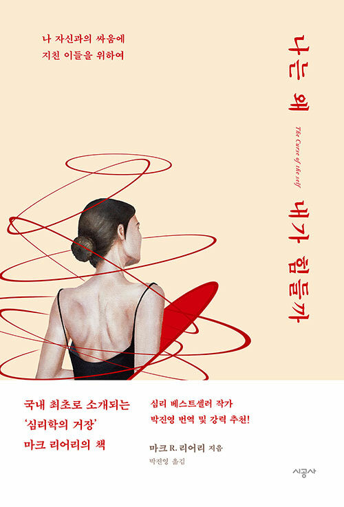
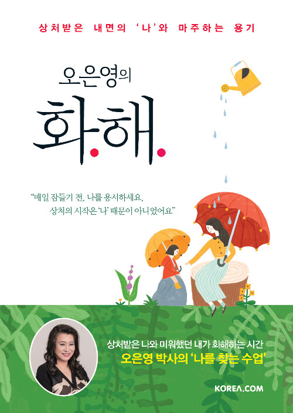

작은 별이지만 빛나고 있어 고단한 일상에서 가끔 우리는 각자의 빛을 잊고 살 때가 있다. 빛나야 하는 이유도 점점 내가 아닌 타인, 혹은 다른 이유가 되어버리는 세상. 세상이 제멋대로 정의한 거대한 별만 바라보느라, 내 안의 빛을 보고 있지 못한 우리에게 건네는 작가의 위로. 잊지 말자, 우리는 모두 각자의 생김새대로, 제각기 다른 방식으로 빛나고 있다는 것을.
by 라이언

3

자신 없다는 착각 부정적인 생각으로 가득 차 스스로를 비하하며 자신감을 잃어 가는 이들을 위해 프랑스 최고의 정신의학과 의사가 왜 자신감이 부족한지 살펴보며 자신감을 키울 수 있는 해결책들을 제시한다. 이 책에서 제시한 실생활에 유용하게 활용할 수 있는 방법들을 실천하다 보면 자신을 억누르는 부정적인 시선에서 벗어나 스스로의 가치를 깨닫고 자신감 넘치는 행복한 삶을 살 수 있을 것이다.
by 캥거루
1

나는 왜 내가 힘들까 저자 마크 리어리는 자아가 마치 인간에게 내려진 저주와도 같다고 이야기한다. 우리가 인생에서 겪는 가장 큰 고난들의 대부분은 직간접적으로 자아의 소행이라는 것이다. 물론 자아가 없는 편이 낫다는 절망적인 메시지를 주려는 것은 아니다. 다만 인간이 갖춘 이 정신적 도구를 어떻게 활용하고 통제할지 이해해야만 보다 분별력 있고 행복한 삶을 누릴 수 있다는 의미다.
by 기러기
4

기분이 태도가 되지 않게 (15만 부 기념 썸머에디션) 이 책은 기분을 잘 다스리지 못해 기어이 못난 태도를 보여주고 마는 사람들을 위해 쓰였다. 기분에 조종당하고 감정에 휘둘리는 이들이 꼭 알아야 하는 심리에 대해 주로 이야기한다. 우리는 왜 그리 감정에 흔들리는지, 어떻게 해야 감정이 나에게 미치는 영향을 줄일 수 있는지 명쾌한 처방을 받을 수 있다. 저자 레몬심리는 “감정을 통제해야 인생을 통제할 수 있다”고 말한다. 감정에 끌려 다니는 노예가 아니라 주인으로 바로 서는 방법을 배워야 당신의 인생이 달라질 것이다.
by 으르렁

오은영의 화해 이 책은 지면에 정신 상담을 연재하며 쏟아져 들어온 수많은 아픈 사연들과 어찌할 바를 몰라 저자를 찾아와 무너져 내렸던 사람들의 고통이 어디에서 온 것인지, 어떻게 다스려야 하는지를 정신건강의학과 전문의의 입장에서 깊이 분석하고 고뇌하며 연구한 최선의 조언이 담겨 있다. 우리는 누구나 자주 인생이 두렵지만 어린 시절 부모와의 관계에서 모호함과 두려움을 경험한 사람은 살아가는 데 유독 더 큰 어려움을 겪게 된다. 지금 너무 힘들어 주저앉아 있을 독자에게, 충분히 지쳐 있을 독자에게, 저자는 나를 알아차리기 위해 아주 조금만 힘을 내어 보라고 말한다. 아무것도 할 수 없었던 그때와는 다르다고, 그때 상처받았고 지금도 아프다고 말할 수 있는 독자의 내면에 힘이 있다는 것을 믿어 보라고 따뜻한 위로와 함께 명쾌한 조언을 건넨다.
by 사시미
8